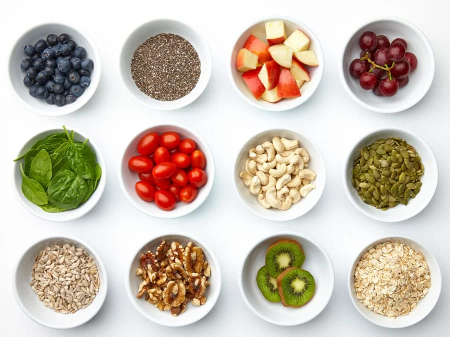
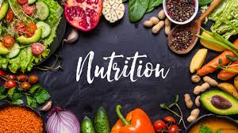

Nutrition
Nutrition Goals

“Eating better” is the type of goal that sounds great but is difficult to achieve. Improving your nutrition requires smaller steps and a specific focus. Here are some ideas for setting health goals when it comes to what you eat and drink.
Drink More Water
There are many benefits to drinking more water every day. However, some may find it difficult to drink the recommended eight daily glasses of water. Swapping out sugary, caffeinated, or alcoholic drinks (all of which can sabotage a healthy diet) for water with ice and/or lemon is a great first step to better health.
Log Three Meals a Day
Have you ever gained a few pounds after what seemed like a week of healthy eating? You may be consuming more than you think. Logging meals with a nutrition app or notebook can help you see exactly what you are eating – and what you could cut out.
Practice Portion Control
Restaurants often serve up to twice or even three timesthe recommended serving size of a meal. But, you don’t need to bring a portable food scale the next time you eat out. Use a portion control guide that compares common food sizes to your hand or common household items.
Eat Breakfast
Unfortunately, coffee does not count as a full breakfast. Eating a well-balanced meal can keep you full, get your metabolism moving, and set you up for more healthy choices. Try to eat at least 200 calories for breakfast to start each day off right.
Eat at the Table
Busy schedules sometimes mean that meals take place away from the table. But on-the-go meals, such as fast food or nutrition bars, don’t help you practice mindful eating. Make a goal to eat at least one meal a day at the table, preferably without electronics.
